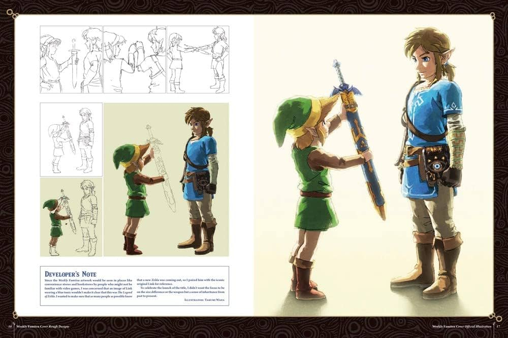

Historia de Nintendo
Nintendo fue fundada en 1889 por Fusajiro Yamauchi en Kioto, Japón, como una empresa de cartas que fabricaba Hanafuda, un juego de cartas japonés. Durante las primeras décadas, la compañía se expandió a otros productos, incluyendo juguetes y juegos de mesa. En la década de 1970, Nintendo comenzó a explorar el mundo de los videojuegos, lanzando su primera consola, la Color TV-Game, en 1977. Sin embargo, fue en 1981, con el lanzamiento de Donkey Kong, que Nintendo se estableció como un jugador importante en la industria de los videojuegos. Este juego no solo introdujo a Mario, uno de los personajes más icónicos de la historia, sino que también sentó las bases para el desarrollo de futuros títulos exitosos.
En 1983, Nintendo lanzó la Famicom (Family Computer) en Japón, que más tarde se conoció como Nintendo Entertainment System (NES) en América del Norte. La NES revitalizó la industria de los videojuegos después de la crisis de 1983 y se convirtió en un fenómeno cultural. Con títulos emblemáticos como Super Mario Bros., The Legend of Zelda y Metroid, Nintendo se consolidó como un líder en el desarrollo de videojuegos. A lo largo de los años, la compañía continuó innovando con consolas como la Super Nintendo, Nintendo 64, GameCube, Wii, y más recientemente, la Nintendo Switch, cada una introduciendo nuevas tecnologías y experiencias de juego.
Desarrollo de The Legend of Zelda
The Legend of Zelda fue lanzado en 1986 y se convirtió en un hito en el mundo de los videojuegos. Creado por Shigeru Miyamoto y Takashi Tezuka, el juego introdujo un mundo abierto y una narrativa rica, estableciendo las bases para futuros títulos de aventuras. La idea original surgió de las experiencias de Miyamoto explorando cuevas y bosques en su infancia, lo que inspiró la creación de un mundo expansivo donde los jugadores pudieran aventurarse y descubrir secretos.
El juego combinó elementos de acción, aventura y resolución de acertijos, permitiendo a los jugadores explorar el reino de Hyrule, enfrentarse a enemigos y recolectar objetos mágicos. La mecánica de juego innovadora, que incluía la posibilidad de guardar el progreso, fue revolucionaria para la época. The Legend of Zelda no solo fue un éxito comercial, sino que también recibió aclamación crítica, estableciendo un nuevo estándar para los videojuegos de rol y aventura.
Desde su lanzamiento, la serie ha crecido para incluir múltiples secuelas y spin-offs, cada uno expandiendo la historia y el universo de Zelda. Títulos como Ocarina of Time, The Wind Waker y Breath of the Wild han sido aclamados por su diseño innovador y su narrativa envolvente, consolidando a The Legend of Zelda como una de las franquicias más queridas y respetadas en la historia de los videojuegos.
Personajes Icónicos
Link

Link es el protagonista de la serie, conocido por su valentía y habilidades en combate. A lo largo de los juegos, Link ha asumido diferentes formas y estilos, pero siempre se le reconoce por su característico gorro verde y su espada.
Princesa Zelda

La Princesa Zelda es un personaje central en la serie, a menudo capturada y en necesidad de ser rescatada. Sin embargo, en muchos juegos, también juega un papel activo en la lucha contra el mal, mostrando su propia valentía y habilidades mágicas.
Ganondorf

Ganondorf es el principal antagonista de la serie, buscando el poder de la Trifuerza para dominar Hyrule. Su presencia en los juegos representa el mal absoluto, y su lucha contra Link y Zelda es un tema recurrente en la serie.
Más Información
Para más información sobre Nintendo y sus juegos, visita su página oficial: Nintendo Official Site.